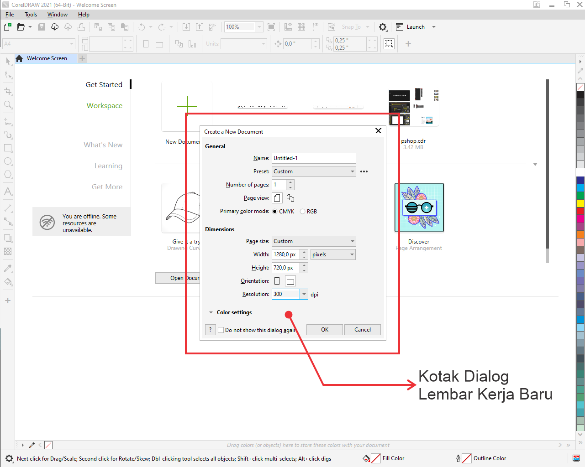

Desain grafis adalah suatu bentuk komunikasi visual yang menggunakan teks atau gambar untuk menyampaikan info atau pesan. Corel draw merupakan sebuah program komputer atau software yang berfungsi sebagai editor grafik vektor. Ada banyak yang dapat kita desain mengunakan aplikasi Corel Draw antara lain: Desain Logo, Desain Baju, Desain Karakter, Desain Spanduk, Desain Brosur, Desain Postcard, dll. Pada bab kesatu ini akan dibahas berbagai hal tentang:
- Pengenalan Antarmuka CorelDRAW
- Penggunaan Toolbox Standar
- Membuat Objek Dasar
1. Lebih User Friendly
Untuk pengguna awam, tampilan CorelDraw lebih bersahabat dibandingkan AI. Tampilan Coreldraw sederhana dan pengguna mungkin lebih terbiasa karena tata letak dan warna latarnya mirip seperti ms word. Sedangkan Fitur-fitur AI lebih kompleks dan tersembunyi.
2. Formart Import dan Export Cukup Lengkap
Coreldraw mempunyai banyak format save data baik untuk keperluan import maupun export data. Bahkan coreldraw menyediakan format AI, artinya data yang dibuat di coreldraw bisa juga dibuka di Adobe Illustrator yang notabene adalah rivalnya. Ini tidak berlaku sebaliknya.
3. Resolusi Tinggi
CorelDraw menyediakan resolusi atau kapasitas gambar yang besar, ukurannya mulai dari inchi, milimeter, centimeter sampai kilometer. Jadi software ini cocok digunakan pada industri yang kadang harus mencetak gambar dalam skala gambar besar.
4. Ramah di Percetakan
Bagaimanapun Corel lebih populer dibandingkan produk keluaran kompetitornya. Ketika akan mencetak/print gambar ke percetakan, software yang terinstal dalam komputer mereka adalah Corel. Ini masalah ketika anda membawa file dengan format bawaan Adobe (misalnya) ke percetakan. Mereka tentu saja akan menolak dan mau tidak mau kita harus menyesuaikan dengan software yang ada di kompuer mereka.
Kekurangan CorelDRAW
1. Ukuran file besar
Apikasi ini menuntut penggunaan PC yang memiliki spesifikasi mumpuni dan dalam sektor RAM yang tinggi karena ukuran file mentah yang dihasilkan bisa cukup besar. Apalagi jika desainnya terbilang kompleks.
2. Sulit untuk membuat tabel
Karena berbasis vektor, membuat tabel di Corel Draw agak sedikit sulit karena membutuhkan beberapa klik untuk mendapatkan hasil tabel sesuai dengan yang diinginkan.
3. Color Space harus dikoreksi sebelum penggunaan secara profesional
Permasalahan terbesar yang dihadapi oleh desainer grafis ketika menggunakan Corel Draw adalah akurasi warna dari palet yang disediakan. Tak jarang, warna yang digunakan tidak sesuai dengan hasil cetakan.
Tampilan Awal

Keterangan :
- New Document, berfungsi untuk membuat membuat lembar kerja baru.
- New From Template, berfungsi untuk membuat desain berdasarkan template yang telah tersedia.
- Open Recent, berfungsi untuk membuka dokumen yang baru saja kita buka atau buat.
- Open Other, berfungsi untuk membuka dokumen dari dalam folder atau membuka file yang akan disisipkan kedalam Corel Draw.
Tampilan Membuat Dokumen Baru
Beberapa teks contoh cepat untuk dibangun di atas judul kartu dan membuat sebagian besar konten kartu.
Tampilan Lembar Kerja Baru

Keterangan :
- Tool Bar, bagian yang berisi beberapa tombol perintah untuk menjalankan suatu perintah.
- Tool Box, bagian yang berisi beberapa tombol perintah untuk membuat dan memodifikasi obyek gambar.
- Lembar Kerja, area yang digunakan untuk mengolah obyek gambar. Bagian ini juga merupakan area pencetakan gambar.
- Color Palette, bagian yang berisi daftar pilihan warna yang dapat kita gunakan untuk memberi warna pada obyek gambar.
Toolbox
Adapun fungsi dan cara menggunakan dari tool yang ada di Toolbox sebagai berikut :

- Pick tool : untuk memilih atau menyeleksi dan mengatur ukuran, memiringkan, dan memutar objek.
- Freehand Pick tool untuk menyeleksi objek dengan bebas.

- Shape tool untuk mengedit bentuk objek kurva.
- Smudge Brush tool untuk mengubah objek vektor dengan cara men-drag sepanjang garis luar.
- Roughen Brush tool untuk mengubah garis luar dari objek vektor dengan cara men-drag sepanjang garis luar.
- Free Transform tool untuk mengubah suatu objek dengan menggunakan Free rotation, angle rotation, Scale, dan Skew tool.

- Croop tool untuk menghilangkan area yang tidak dikehendaki.
- Knife tool untuk memotong objek.
- Eraser tool untuk menghilangkan daerah yang tidak diinginkan pada gambar.
- Virtual Segment Delete tool untuk menghapus bagian dari objek-objek diantara persimpangan.

- Zoom tool untuk merubah besaran level dalam tampilan/jendela kerja.
- Pan tool untuk mengontrol bagian gambar mana yang akan di gambar ulang dalam tampilan/jendela kerja.

- Freehand tool untuk menggambar garis tunggal dan kurva.
- 2-Point Line tool untuk menggambar garis tunggal tanpa kurva.
- Bèzier tool untuk menggambar kurva satu bagian pada waktu yang sama.
- Artistic Media tool menyediakan akses pada Brush, Sprayer, Calligraphic, dan Pressure tool.
- Pen tool untuk menggambar kurva satu segmen pada satu waktu.
- Polyline tool untuk menggambar garis-garis dan kurva.
- 3 Point Curve tool untuk menggambar suatu kurva dengan menentukan titik awal, akhir, dan titik tengah.

- Smart Fill tool untuk mewarnai objek-objek yang terlampir, tool ini dapat mewarnai isi dan garis dari objek tersebut dan objek yang telah terisi dapat dipisahkan dengan gambar dasarnya.
- Smart Drawing tool mengubah coretan-coretan tangan menjadi garis yang halus dan sempurna.

- Rectangle tool untuk menggambar bujur sangkar dan kotak.
- 3 point Rectangle tool untuk menggambar bujur sangkar pada suatu sudut tertentu.

- Ellipse tool untuk menggambar bentuk lonjong atau lingkaran.
- 3 point Ellipse tool untuk menggambar bentuk lonjong atau lingkaran pada suatu sudut tertentu.

- Polygon tool untuk menggambar poligon atau bintang secara simetris.
- Star tool untuk menggambar bentuk bintang yang sempurna.
- Complex Star tool untuk mengggambar bentuk bintang yang komplek atau bintang yang mempunyai banyak sisi.
- Graph Paper tool digunakan untuk menggambar sekat yang terdiri dari garis-garis serupa.
- Spiral tool digunakan untuk menggambar spiral.

- Basic Shape tool untuk memilih bermacam-macam bentuk, termasuk bentuk smile, halilintar, bentuk hati, dan lain-lain.
- Arrow Shape tool untuk menggambar beraneka ragam jenis bentuk panah, dan arah panah.
- Flowchart Shapes tool untuk menggambar symbol flowchart.
- Banner Shapes tool untuk menggambar bentuk yang menyerupai pita atau efek ledakan.
- Callout Shapes tool untuk membuat label dan callout.